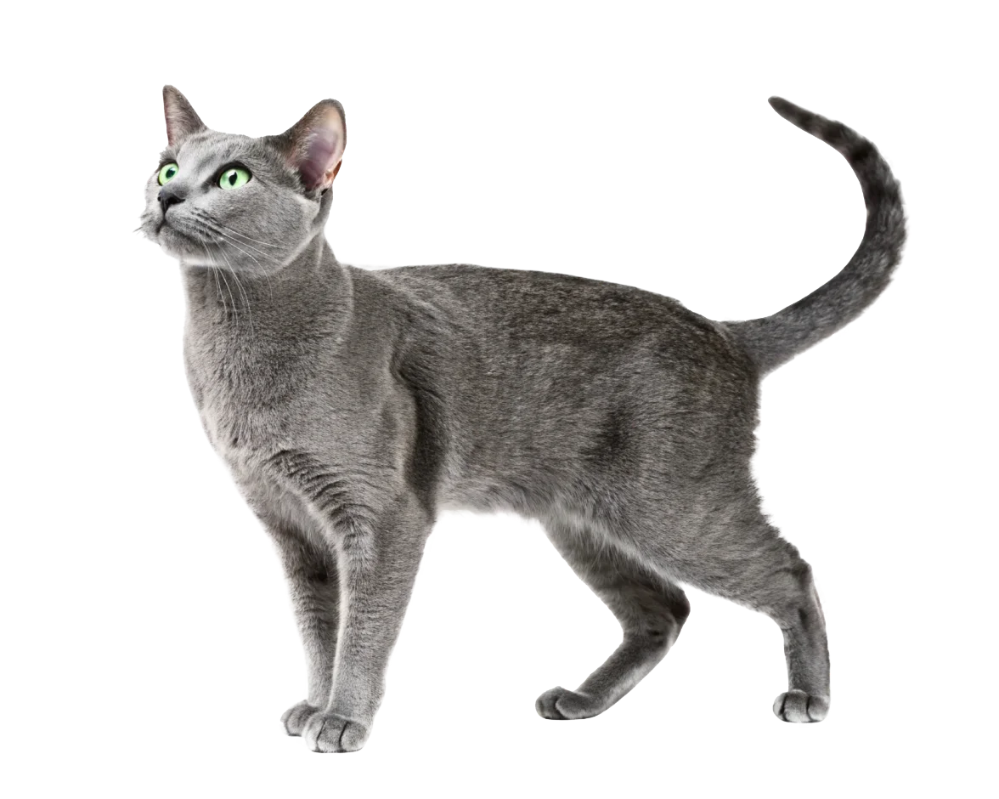

¿Tu gato tiene
problemas urinarios?
Es una de las consultas veterinarias más frecuentes, sobre todo en machos castrados y gatos 100% indoor. La clave está en dos frentes: un alimento específico que cuide el pH de la orina y más hidratación en el día a día.
Recomendado por el equipo veterinario de Puppis
- Alimento urinary (seco o húmedo), siempre con indicación veterinaria.
- Más agua: una fuente bebedero aumenta el consumo diario.
- Litera siempre limpia, con piedras aglutinantes de grano fino.
¿Qué alimento le doy a un gato con problemas urinarios?Uno formulado urinary, siempre con indicación veterinaria: controla los minerales y el pH de la orina.
¿Cómo hago para que tome más agua?Fuentes en movimiento, varios bebederos lejos de la comida y sumar alimento húmedo a la dieta.